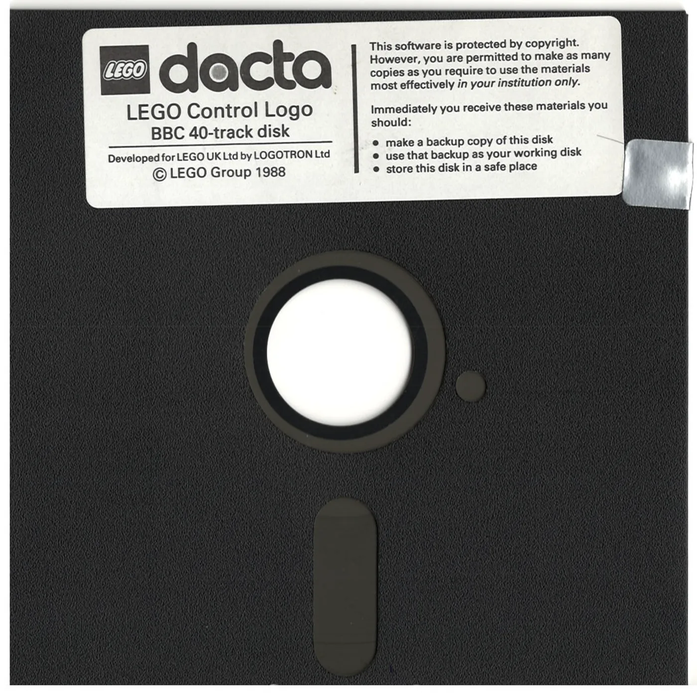

Made some progress hunting down rare dacta stuff — a passion at the intersection of lego and retro electronics. Dug up this floppy from the eighties on eBay — a LEGO Control Logo disk. It's a floppy for the British
BBC Micro computer.
There aren't many good photos of floppies from that era online, so I stuck this one in an office scanner =)
Comments